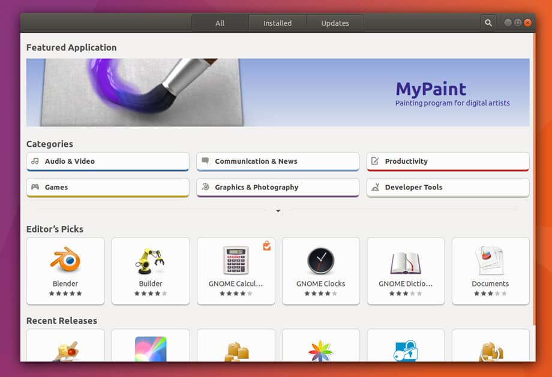

Dos programas compilados aos empacotados universalmente
Guia completo para iniciantes sobre como instalar programas no Linux
Os programas podem vir de muitas fontes e cada equipe de desenvolvimento pode entregar seu software da maneira que achar melhor. Por isso, conhecer as formas de como instalar programas no Linux é fundamental.
Instalar programas no Linux, se tornou a coisa mais simples de se fazer hoje em dia. Dependendo da distribuição Linux, você tem recursos complementares que facilitam ainda mais o processo. As distribuições Linux, ao longo do tempo, vem melhorando e criando métodos para facilitar a instalação de pacotes no Linux. Gerenciadores de pacotes, bem como: apt e yum, são exemplos legados dessas mudanças.
Atualmente, existem projetos que visam a universalização do modo e distribuição de programas para os sistemas Linux. Entre eles, destaco o Snap e Flatpak; Canonical e Red Hat como mantenedoras, respectivamente.
Instalar programas no Linux
O histórico de desenvolvimento e publicação de aplicações nos sistemas Linux é amplamente discutido. A criação dos gerenciadores de pacotes (APT e DNF, por exemplo) foi repensada por conta de propostas para “empacotamento” de aplicações Linux, vide Snap, Flatpak e AppImage.
Para os idealizadores desses projetos, o cenário atual das aplicações Linux é problemático e afeta a flexibilidade de uso e desenvolvimento; já que para cada distro ou sistema Linux é preciso configurar bibliotecas e componentes peculiares para fazê-la funcionar. No passado, e ainda hoje, isso é contornado, trivialmente, com os pacotes pré-compilados ou, na ausência, deles, com os distribuídos via tar.gz. Sendo assim, daqui destaco algumas maneiras para instalar programas no Linux:
1. Via Repositórios
Por mais de uma década, o Linux usou repositórios de software para distribuir software. Um “repositório” neste contexto é um servidor público da distribuição que hospeda pacotes de software pré-compilados - vide explicação no tópico a seguir.
Uma distribuição Linux fornece um gerenciador de pacotes, comandos, e geralmente uma interface gráfica para esses comandos, que baixa o software do servidor e o instala no seu computador. É um conceito tão simples que serviu de modelo para todos os principais sistemas operacionais de celulares e, mais recentemente, para as “lojas de aplicativos”.

A instalação a partir de um repositório de software é o principal método de instalação de aplicativos no Linux. Deve ser o primeiro método no qual você procura qualquer aplicativo que pretenda instalar. Para instalar a partir de um repositório de software, geralmente, se usa algum gerenciador de pacotes.
O comando a ser usado depende da distribuição Linux a usada. Por exemplo: - Debian e derivados, como Ubuntu e Linux Mint - gerenciador APT - Fedora - gerenciador DNF - OpenSUSE - gerenciador zypper - Arch Linux - gerenciador pacman Assim, como exemplo prático, vou simular a instalação, via linha de comando, do editor de texto nano em algumas distribuições Linux:
Debian e derivados
sudo apt-get install nanoRedHat e derivados
sudo yum install nanoFedora
sudo dnf install nanoOpenSUSE
sudo zypper install nanoAlém disso, existem os repositórios extras de cada distribuição Linux, além do repositório padrão. Por exemplo:
- EPEL atende ao Red Hat Enterprise Linux e CentOS.
- RPMFusion serve ao Fedora
- O Ubuntu tem vários níveis de suporte, além de uma rede PPA (Personal Package Archive)
- O Packman fornece software extra para o OpenSUSE
- O SlackBuilds.org fornece scripts de compilação da [comunidade para Slackware] (https://www.linuxdescomplicado.com.br/2019/08/slackware-cria-programa-de-financiamento-coletivo.html).
Assim, por padrão, seu sistema operacional Linux está configurado para buscar apenas seus repositórios padrões oficiais. Se você deseja usar opções de software diferentes, você deve adicionar esses repositórios extras. Geralmente, você pode instalar um repositório como se fosse um pacote de software.
De fato, quando você instala certos softwares, como o navegador da Web Vivaldi, o Google Chrome e muitos outros, o que você está instalando é o acesso aos repositórios particulares, a partir dos quais a versão mais recente do aplicativo é mantida por eles.
2. Via pacotes pré-compilados
SAIBA MAIS
Pacotes pré-compilados são pacotes já distribuídos num arquivo pronto, com dependências já configuradas, em um formato simples de instalar (.deb – Debian e .rpm – Red Hat, por exemplo).
O modelo de repositório é tão popular porque fornece um link entre o usuário (você) e o desenvolvedor. Quando atualizações importantes são divulgadas, seu sistema solicita a aceitação delas e você pode concentrar todas em um local centralizado.
Entretanto, há momentos em que um pacote é disponibilizado sem nenhum repositório anexado. Esses pacotes instaláveis vêm de várias formas. Por exemplo, um desenvolvedor distribui software em um formato de pacote pré-compilado Linux comum, como .rpm, .deb.
Em relação a eles, você não os obtêm através de um repositório; você apenas faz o download do instalador. Esses pacotes únicos podem ser instalados com as mesmas ferramentas usadas na instalação a partir de um repositório. Se você clicar duas vezes no pacote baixado, um instalador gráfico é iniciado e o orienta no processo de instalação.
Como alternativa, você pode instalar a partir de um terminal. A diferença aqui é que um arquivo de pacote único que você baixou da Internet não vem de um repositório. É uma instalação “local”, o que significa que o seu software de gerenciamento de pacotes não precisa baixá-lo para instalá-lo. A maioria dos gerenciadores de pacotes lida com isso de forma transparente: Por exemplo, o editor de vídeo Lightworks fornece um arquivo .deb para usuários Debian e derivados (como Ubuntu e LinuxMint) e um arquivo .rpm para usuários RedHat e derivados (como Fedora e CentOS). Quando você deseja atualizar, você volta ao site e baixa o arquivo apropriado, mais recente.
Usando o gerenciador de pacotes DNF e a distribuição Fedora:
sudo dnf install lwks-14.0.0-amd64.rpmEm alguns casos, você precisa executar etapas adicionais para que o aplicativo seja executado. Leia com atenção a documentação sobre o software que está instalando.
3. Via pacotes “universais”
Imagine poder executar aplicações Linux independente da distribuição usada ou não se preocupar com qual formato de pacote deve usar para cada distribuição e derivadas, bem como: .deb ou .rpm.
Isso já é possível graças aos ‘formatos universais’ Snap, Flatpak e AppImage, disponíveis para Linux. Em outras palavras, você poderá usar um programa no Fedora e no Ubuntu a partir de um mesmo arquivo – sem a necessidade de instalação de bibliotecas compartilhadas ou complementos peculiares de cada sistema.
No caso do AppImage, a ideia central não é nova e lembra o uso dos programas portáteis no Windows; que você carrega no pendrive e pode executar diversas aplicações sem instalá-las. Estes “novos” formatos contêm todos os arquivos necessários, incluindo as dependências para os outros pacotes. Consequentemente, eles conterão arquivos de instalação maiores. Por outro lado, você não terá problema se remover uma aplicação em um desses formatos; pois nenhum outro pacote/programa será afetado por causa de conflito de dependências, por exemplo. Por isso, acredito que seja importante você conhecer suas peculiaridades e saber quando deve usar ou não cada um deles.
Leia o artigo “Snap, Flatpak e AppImage – formatos universais para instalação de programas no Linux” e saiba mais sobre o assunto.
4. Via pacotes diretos “da fonte”
Irão aparecer situações onde você não terá nenhuma dessas opções disponíveis… pois alguns desenvolvedores de softwares disponibilizam seus programas diretamente pelo código-fonte (source) – que por sinal era, nos primórdios, o único método utilizado para instalação de programas no Linux (algumas distribuições ainda mantêm essa técnica com frequência).
Em resumo, você tem acesso a um arquivo compactado no formato .tar.gz (maioria das vezes), contendo o código-fonte do programa, e a instalação consiste em compilar e instalar os executáveis gerados na máquina. Mas por que ainda se preocupar com isso se existem pacotes pré-compilados para instalação?! Devido às diferenças que existem entre uma distribuição e outra um pacote do Fedora não funcionará no Debian, por exemplo.
Assim, essa técnica garante suporte a todas as distribuições Linux, universalmente! Ou seja, baixando um programa distribuído a partir do código-fonte (source), não será preciso se ater a qual distro Linux você está usando; pois, verificada as dependências necessárias, será possível compilar e instalar o programa. Isso se deve ao fato de que essa maneira de distribuir os programas, diretamente pelo código-fonte (source), não é feita por empacotamento pré-compilado (pacote .deb ou .rpm, por exemplo). Assim, cabe ao usuário ter conhecimento prévio para compilar e instalar programas Linux distribuídos diretamente pelo código-fonte, normalmente compactados via tar.gz.
SAIBA MAIS
Compilar significa transformar o código-fonte, escrito pelo programador, nos arquivos binários que são executados pelo sistema.
Por outro lado, um problema, em compilar e instalar programas a partir dos fontes, é que o processo é demorado e, para muitos, nem sempre simples. É preciso ter instalado uma grande quantidade de compiladores e bibliotecas, necessários para compilar os mais diversos programas. E isso causa bastante dificuldade para os usuários, principalmente iniciantes. Por isso, acredito que seja importante você conhecer suas peculiaridades.
Leia o artigo “Saiba como compilar e instalar programas Linux distribuídos diretamente pelo código-fonte [tar.gz]” e saiba mais sobre o assunto.
5. Via Scripts de instalação genérica
Alguns desenvolvedores lançam seus pacotes em um dos vários formatos genéricos. As extensões comuns incluem .run e .sh. Os drivers da placa gráfica NVIDIA, os pacotes FX visuais Foundry, como Nuke e Mari, e muitos jogos sem DRM do GOG usam esse estilo de instalador, por exemplo.
Esse modelo de instalação depende do desenvolvedor para fornecer um “assistente” de instalação. Alguns dos instaladores são gráficos, enquanto outros apenas rodam em um terminal. Você pode executar o instalador diretamente de um terminal, por exemplo:
sh ./gog_warsow_x.y.z.sh
Via | Opensource.com